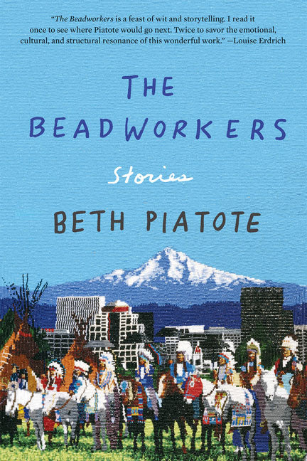

In this short story collection, Beth Piatote employs a variety of forms and settings to offer visions of Pacific Northwest Indigenous life. It begins with the very short, lyrical pieces “Feast I,” “Feast II,” and “Feast III,” which move from poetry to prose poetry to flash fiction. “The News of the Day” sees a nineteenth-century college student receive news of his community’s slaughter by federal forces. “Fish Wars” explores the Pacific Northwest’s mid-twentieth century fights for recognition of Indigenous fishing rights through the perspective of a young girl whose father is arrested for participating. “Beading Lesson” presents a beading teacher discussing the significance of the traditional art form during a lesson. In “wIndin!,” an artist devises an Indigenous version of Monopoly—an art piece more than a game—and its rules structure a narrative about her and her best friend, who support each other through heartbreak and grief. “Rootless” provides a snapshot of a woman returning to the Bay Area from a visit to her traditional lands. In “Falling Crows,” a mother travels to visit her son, wounded in the military, in the hospital, while his sister mourns a breakup and his uncle shares work on language revitalization. “Katydid” follows two Salem-based friends who travel to Oklahoma to connect with one woman’s estranged Pawnee family, with mixed results. The collection ends with “Antíkoni,” a play that reworks Sophocles’s Antigone with a Nez Perce-Cayuse family at its center. In verse, and with a chorus of aunties, Piatote situates the classic’s issues of burial, loyalty, and law within the context of the Native American Graves Protection and Repatriation Act (NAGPRA) and tribal politics. Throughout the collection run traditional stories, the Nez Perce language, and references to Pacific Northwest Indigenous history and the impacts of federal Indian law.
I read The Beadworkers before I moved to Oregon or knew much about the state. I thought of the book as very Pacific Northwest, and in the back of my mind, recalled references to Eugene and Salem, but only when I revisited it did I realize how deeply Oregon it is. Many Oregon locales, as well as several of the state’s tribes, play a role in these stories. As far as I can tell, Piatote only lived in Oregon while pursuing her master’s degree, but she is Nez Perce from Chief Joseph’s Band, and thus Indigenous to what is now Oregon—even though, due to the legacies of removal and the consolidation of tribes, her enrollment is with the Confederated Tribes of the Colville Reservation, headquartered in Washington. Piatote might not fit some childhood or residency-based definitions of an “Oregon author,” but I find it important to consider her one.
Attachment to land and displacement from it are intertwined, and central to so much Indigenous literature. In The Beadworkers, Piatote depicts a sort of Pacific Northwest Indigenous cosmopolitanism, setting the stories of mostly Nez Perce characters, but also those from other tribes in the region, alongside each other. Whether or not they are on their traditional lands, place is important to these characters. For example, “wIndin!” follows two friends, Iris and Trevor (Umatilla and Yakama), who live in Eugene. When Iris experiences a death in the family, they drive to Pendleton for the funeral on Interstates 5 and 84. It’s mostly a silent journey, and Piatote describes it with the names of cities they pass, lineated to evoke the passing of time and distance: “Salem. Brooks. / Woodburn. Wilsonville. / Portland. / Troutdale. Hood River” (72). Only when they come to Celilo Falls do they stop and speak. “My auntie used to talk about this place,” Iris says; Trevor mentions that his grandmas called it “Wyam,” and says “Everyone used to come here,” “before they blew it up for the dam,” referencing that the Dalles Dam drowned this monumental fishing and gathering site (73). This moment indicates that the intertribal relationality in The Beadworkers is not at all new to the region.
Characters in other stories reach for this sort of connection. In “Katydid,” the Nez Perce protagonist in Salem (where they are “suburban Indians at best”) has an affair with her Klamath boss, whose grief over tribal Termination she holds, and attends intertribal Culture Nights. “Beading Lesson” sees a speaker in the Umatilla area speak about her work with the Confederated Tribes, from preschoolers to incarcerated men. It’s impossible to address all of the stories’ nuances in the space I have here, but The Beadworkers makes clear that Oregon has held significance as a place since long before the United States drew its borders, and, despite anti-Indigenous policies at all levels, Indigenous art and intertribal connection endure here.
Beth Piatote is Nez Perce from Chief Joseph’s Band, enrolled with the Confederated Tribes of the Colville Reservation. She grew up in rural Idaho. Piatote holds a master’s degree from the University of Oregon and a PhD from Stanford University, and is currently an associate professor of English and Comparative Literature at the University of California, Berkeley. She frequently teaches at the Summer Fishtrap Gathering of Writers in Joseph, Oregon. In addition to The Beadworkers, she is the author of a scholarly monograph, Domestic Subjects: Gender, Citizenship, and the Law in Native American Literature (2013), and a poetry collection, Distant Water (2026). Piatote is an advocate for Indigenous language revitalization, which Distant Water addresses. Antíkoni, the play that appears in The Beadworkers, premiered on stage in 2024.
Beth Piatote, Distant Water (2026)
Charlene Willing McManis with Traci Sorell, Indian No More (2019)
- Children’s novel that explores Termination and displacement
Chief Joseph, “An Indian’s View of Indian Affairs” (1879)
- Classic speech from the famed Nez Perce chief
